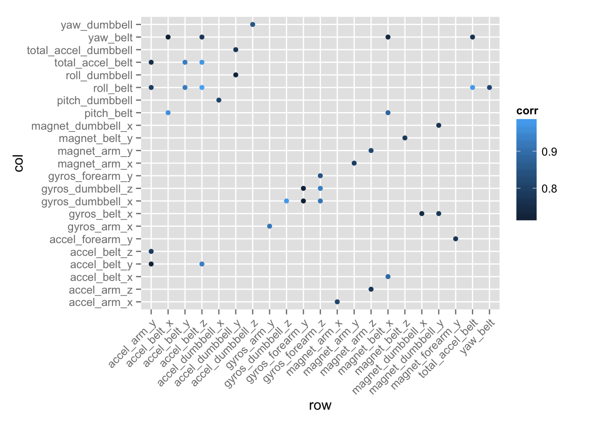

Using devices such as Jawbone Up, Nike FuelBand, and Fitbit it is now possible to collect a large amount of data about personal activity relatively inexpensively. These type of devices are part of the quantified self movement – a group of enthusiasts who take measurements about themselves regularly to improve their health, to find patterns in their behavior, or because they are tech geeks. One thing that people regularly do is quantify how much of a particular activity they do, but they rarely quantify how well they do it.
In this project, our goal will be to use data from accelerometers on the belt, forearm, arm, and dumbell of 6 participants. They were asked to perform barbell lifts correctly and incorrectly in 5 different ways. More information is available from the website here: http://groupware.les.inf.puc-rio.br/har. [1]
[1] Velloso, E.; Bulling, A.; Gellersen, H.; Ugulino, W.; Fuks, H. Qualitative Activity Recognition of Weight Lifting Exercises. Proceedings of 4th International Conference in Cooperation with SIGCHI (Augmented Human ’13) . Stuttgart, Germany: ACM SIGCHI, 2013.
We have data gathered from 6 participants all doing the same exxercise. We know if they did the exercise the right way (classe: A) or wrong (other classes) as labeled by the experts (Classe variable in the training data). The measurements are gathered by sensors installed on the subjects’ arm, belt, forearm, and on the dumpbell.
First, we need to load the data. We need to specify which strings should be considered as missing value, in order to load the measurements as numerical values.
training <- read.csv("./Project/data/pml-training.csv", na.strings = c("","#DIV/0!", "NA"))
testing <- read.csv("./Project/data/pml-testing.csv", na.strings = c("","#DIV/0!", "NA"))
names(training[,1:10])## [1] "X" "user_name" "raw_timestamp_part_1"
## [4] "raw_timestamp_part_2" "cvtd_timestamp" "new_window"
## [7] "num_window" "roll_belt" "pitch_belt"
## [10] "yaw_belt"library(ggplot2)
ggplot(training, aes(classe)) +
geom_bar(fill= "blue")Each classe is represented enough in the data set.
The first 7 variables are identifiers and configuration parameters. We need to separate the measurements from other variables in the data set.
outcome <- 160
irrelevant <- c(1:7)
predictors <- training[,-c(irrelevant,outcome)] Next, we examine the predictors for missing values. There are a lot of measurement variables that have a lot of missing values. These need to be left out in our prediction.
percent.nas <- sapply(predictors, function(x){round(sum(is.na(x)) * 100/length(x), 2)})
percent.nas[percent.nas > 0]## kurtosis_roll_belt kurtosis_picth_belt kurtosis_yaw_belt
## 97.98 98.09 100.00
## skewness_roll_belt skewness_roll_belt.1 skewness_yaw_belt
## 97.98 98.09 100.00
## max_roll_belt max_picth_belt max_yaw_belt
## 97.93 97.93 97.98
## min_roll_belt min_pitch_belt min_yaw_belt
## 97.93 97.93 97.98
## amplitude_roll_belt amplitude_pitch_belt amplitude_yaw_belt
## 97.93 97.93 97.98
## var_total_accel_belt avg_roll_belt stddev_roll_belt
## 97.93 97.93 97.93
## var_roll_belt avg_pitch_belt stddev_pitch_belt
## 97.93 97.93 97.93
## var_pitch_belt avg_yaw_belt stddev_yaw_belt
## 97.93 97.93 97.93
## var_yaw_belt var_accel_arm avg_roll_arm
## 97.93 97.93 97.93
## stddev_roll_arm var_roll_arm avg_pitch_arm
## 97.93 97.93 97.93
## stddev_pitch_arm var_pitch_arm avg_yaw_arm
## 97.93 97.93 97.93
## stddev_yaw_arm var_yaw_arm kurtosis_roll_arm
## 97.93 97.93 98.33
## kurtosis_picth_arm kurtosis_yaw_arm skewness_roll_arm
## 98.34 97.99 98.32
## skewness_pitch_arm skewness_yaw_arm max_roll_arm
## 98.34 97.99 97.93
## max_picth_arm max_yaw_arm min_roll_arm
## 97.93 97.93 97.93
## min_pitch_arm min_yaw_arm amplitude_roll_arm
## 97.93 97.93 97.93
## amplitude_pitch_arm amplitude_yaw_arm kurtosis_roll_dumbbell
## 97.93 97.93 97.96
## kurtosis_picth_dumbbell kurtosis_yaw_dumbbell skewness_roll_dumbbell
## 97.94 100.00 97.95
## skewness_pitch_dumbbell skewness_yaw_dumbbell max_roll_dumbbell
## 97.94 100.00 97.93
## max_picth_dumbbell max_yaw_dumbbell min_roll_dumbbell
## 97.93 97.96 97.93
## min_pitch_dumbbell min_yaw_dumbbell amplitude_roll_dumbbell
## 97.93 97.96 97.93
## amplitude_pitch_dumbbell amplitude_yaw_dumbbell var_accel_dumbbell
## 97.93 97.96 97.93
## avg_roll_dumbbell stddev_roll_dumbbell var_roll_dumbbell
## 97.93 97.93 97.93
## avg_pitch_dumbbell stddev_pitch_dumbbell var_pitch_dumbbell
## 97.93 97.93 97.93
## avg_yaw_dumbbell stddev_yaw_dumbbell var_yaw_dumbbell
## 97.93 97.93 97.93
## kurtosis_roll_forearm kurtosis_picth_forearm kurtosis_yaw_forearm
## 98.36 98.36 100.00
## skewness_roll_forearm skewness_pitch_forearm skewness_yaw_forearm
## 98.35 98.36 100.00
## max_roll_forearm max_picth_forearm max_yaw_forearm
## 97.93 97.93 98.36
## min_roll_forearm min_pitch_forearm min_yaw_forearm
## 97.93 97.93 98.36
## amplitude_roll_forearm amplitude_pitch_forearm amplitude_yaw_forearm
## 97.93 97.93 98.36
## var_accel_forearm avg_roll_forearm stddev_roll_forearm
## 97.93 97.93 97.93
## var_roll_forearm avg_pitch_forearm stddev_pitch_forearm
## 97.93 97.93 97.93
## var_pitch_forearm avg_yaw_forearm stddev_yaw_forearm
## 97.93 97.93 97.93
## var_yaw_forearm
## 97.93# Filter highly-NA from predictors
ncol(predictors)## [1] 152predictors <- predictors[, -which(percent.nas > 0)]
ncol(predictors)## [1] 52For the remaining predictors, we need to know how they are correlated to each other.
M <- abs(cor(predictors))
diag(M) <- 0
# Array containing highly-correlated vars
arr <- which(M>.7, arr.ind=T)
# Data frame containing correlated vars
cor.df <- data.frame(row.no= arr[,1], row= names(predictors)[arr[,1]],
col.no= arr[,2], col= names(predictors)[arr[,2]])
cor.df$corr <- mapply(function(i,j) { M[i,j] }, cor.df$row.no, cor.df$col.no)
#M[cor.df$row.no, cor.df$col.no]
# Keep one of the instances of each pair
library(dplyr)##
## Attaching package: 'dplyr'
##
## The following objects are masked from 'package:stats':
##
## filter, lag
##
## The following objects are masked from 'package:base':
##
## intersect, setdiff, setequal, unionnrow(cor.df)## [1] 76cor.df <- filter(cor.df, row.no > col.no)
nrow(cor.df)## [1] 38# visualize correlation btw correlated variables
ggplot(cor.df, aes(row, col, color= corr)) +
geom_point() +
theme(axis.text.x= element_text(angle= 45, vjust=1, hjust= 1))
Because of the movement measurements are highly correlated, we will Principal Component Analysis to get smaller number of uncorrelated predictors to work with.
First we will get the principal components using prcomp() function. Examining the scree plot, we see that 7 components is all we need to explain the most variation.
pcs.pr <- prcomp(predictors, scale. = T)
plot(pcs.pr, type="l")Then, we use caret package to calculate the components for training and test data.
library(caret)## Warning: package 'caret' was built under R version 3.2.3## Loading required package: latticePC.model <- preProcess(predictors, method = "pca", pcaComp= 7)
# Calculate training Principle Components
train.pcs <- predict(PC.model, predictors)
test.pcs <- predict(PC.model, newdata = testing)
test.pcs.ncols <- ncol(test.pcs)
test.pcs <- test.pcs[,(test.pcs.ncols-6):(test.pcs.ncols)]We are ready to use the principal components to predict the Classes of activity. Since we would like to get an accurate prediction and not really interested in model interpretability, I will use a Random Forest model to predict.
We will use k-fold cross validation with k= 10. I didn’t want to use a high K to avoid overfitting.
train.data <- cbind(train.pcs, training$classe)
names(train.data)[ncol(train.data)] <- "classe"
tr <- trainControl(method= "cv", number = 10)
model <- train(classe ~ ., method= "rf", data= train.data, trControl = tr)## Loading required package: randomForest
## randomForest 4.6-12
## Type rfNews() to see new features/changes/bug fixes.
##
## Attaching package: 'randomForest'
##
## The following object is masked from 'package:dplyr':
##
## combinemodel## Random Forest
##
## 19622 samples
## 7 predictor
## 5 classes: 'A', 'B', 'C', 'D', 'E'
##
## No pre-processing
## Resampling: Cross-Validated (10 fold)
## Summary of sample sizes: 17661, 17660, 17660, 17661, 17659, 17658, ...
## Resampling results across tuning parameters:
##
## mtry Accuracy Kappa Accuracy SD Kappa SD
## 2 0.9405777 0.9248187 0.004777331 0.006047638
## 4 0.9376215 0.9210780 0.004597549 0.005830103
## 7 0.9239124 0.9037121 0.004524121 0.005760392
##
## Accuracy was used to select the optimal model using the largest value.
## The final value used for the model was mtry = 2.Given the in-sample error rate, I expect the prediction to be about 90% accurate. Now, we use the model we got in the last step to predict classe for the test data.
test.classe <- predict(model, newdata = test.pcs)## Loading required package: randomForest
## randomForest 4.6-12
## Type rfNews() to see new features/changes/bug fixes.
##
## Attaching package: 'randomForest'
##
## The following object is masked from 'package:dplyr':
##
## combinetest.classe## [1] B A B A A E D B A A B C B A E E A B B B
## Levels: A B C D Estr(test.classe)## Factor w/ 5 levels "A","B","C","D",..: 2 1 2 1 1 5 4 2 1 1 ...result <- data.frame(problem_id= testing$problem_id, classe=test.classe)
result## problem_id classe
## 1 1 B
## 2 2 A
## 3 3 B
## 4 4 A
## 5 5 A
## 6 6 E
## 7 7 D
## 8 8 B
## 9 9 A
## 10 10 A
## 11 11 B
## 12 12 C
## 13 13 B
## 14 14 A
## 15 15 E
## 16 16 E
## 17 17 A
## 18 18 B
## 19 19 B
## 20 20 B